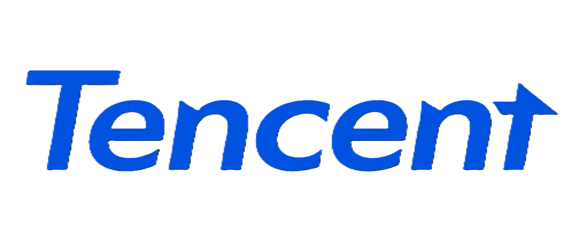

引言
为满足集团日益增长的远程协作需求，公司近期新购入了一批腾讯会议商业版账号。过去集团员工对于腾讯会议的使用普及率有待提高，本次将通过全面普及腾讯会议商业版的功能、使用方法及注意事项，提升全体员工对远程会议的认知水平，同时充分发挥腾讯会议在节约差旅费、提高工作效率方面的重要作用。
目录
功能介绍
全面介绍腾讯会议商业版的核心功能
操作指南
详细说明使用方法和操作流程
最佳实践
明确使用注意事项和最佳实践
成本分析
分析远程会议带来的成本节约效益
标准规范
建立统一的会议标准和规范
腾讯会议商业版核心功能
基础会议功能
- 支持 300 人不限时会议：彻底摆脱3人以上时长限制，满足各类会议需求
- 高清视频画质：最高支持 1080P 原画画质，提供清晰的会议体验
- 多端入会支持：支持 PC 端、移动端、小程序、电话等多种方式入会
- 屏幕共享：支持原画画质 + 30 帧的共享体验，确保内容展示清晰流畅
智能协作功能
- 智能录制功能：支持云录制与本地录制，搭配AI会议纪要，及时沉淀会议资产
- 会议白板：提供激光笔、画笔、文本、图形等多种工具辅助演示
- 字幕&元宝纪要：支持实时转录会议内容，随时回顾不漏项，走神也不怕
- 内容共创：会中可导入文档，与同事共同编辑
会议管理功能
- 会议管理后台：提供可视化会议数据，可联系相关账号负责人
- 会中管控：会中提供指定闭麦功能，会议期间不再聒噪
- 布局控制：自定义会议布局，多种模式随心切换，确保不同多场景下有序展示
- 在线投票：会议分歧快速决策，一键发起实名/匿名投投票
高级会议功能
- 分组讨论：单场会议最多支持 50 个讨论分组，满足培训和研讨需求
- 联席主持人：最多可设置 10 位联席主持人，共同管理会议秩序
- 会议等候室：提供独立等候室，确保核心问题核心人员讨论
- 企业品牌设置：支持自定义会议界面和品牌元素，提升企业形象
安全保障功能
会议加密：端到端加密传输，确保会议内容安全
权限管控：精细的参会成员权限管理，保护敏感信息
水印设置：支持会议水印和禁用笔记截屏功能
企业内部会议：支持设置仅企业内部用户可入会
使用方法与操作指南
3.1 会议预约流程
-
1自主在会议大屏预约会议
如果会议室大屏已登录商业版账号，可自主预约会议
-
2确认是否有线上会议需求
需提前联系会议管理员预定会议并获取会议号
-
3提前说明会议参数
- • 选择会议类型（常规会议 / 周期性会议）
- • 设置会议权限（是否允许成员提前入会、是否开启等候室）
- • 配置录制选项（自动录制 / 手动录制）
- • 要求管理员在会中转让主持人或设置联席主持人
-
4发送邀请
通过邮件、微信、企业微信等方式发送会议邀请
-
5会议提醒
系统会自动发送会议提醒，确保参会人员及时入会
主持人操作
- 会议管控：管理参会人员的音视频权限，维护会议秩序
- 共享屏幕：点击 "共享屏幕" 选择需要共享的内容
- 开启录制：点击 "录制" 按钮开始会议录制
- 分组讨论：创建讨论分组，分配参会人员进行小组讨论
- 会议设置：根据需要调整会议参数和安全设置
参会人员操作
- 加入会议：通过会议链接、会议号或电话入会
- 音视频控制：根据需要开启 / 关闭麦克风和摄像头
- 互动功能：使用聊天、举手、投票等功能参与会议
- 查看共享内容：观看主持人共享的屏幕内容
- 会议笔记：使用个人笔记功能记录会议要点
3.3 移动端使用技巧
快速入会
通过小程序扫码或输入会议号快速入会
手势操作
支持手势切换摄像头、调节音量等操作
离线查看
支持会后查看会议录制和笔记内容
日历同步
将会议添加到手机日历，接收提醒通知
使用注意事项
会议安全注意事项
- 会议信息保密：会议号和邀请链接仅限参会人员知晓，不得随意传播
- 敏感信息保护：涉及商业机密和敏感信息的会议，应设置会议密码和等候室
- 录制内容管理：会议录制内容应按照企业信息安全规定进行存储和分享
- 权限控制：主持人应及时管理参会人员权限，防止无关人员加入会议
会议质量保障
- 网络环境准备：确保网络稳定，建议使用有线网络或信号良好的 WiFi
- 设备检查：提前测试麦克风、摄像头等设备，确保正常工作
- 环境选择：选择安静、光线良好的环境参加会议
- 带宽要求：建议带宽不低于 2Mbps，确保视频和音频流畅
会议礼仪规范
- 准时参会：提前 5-10 分钟进入会议，做好会议准备
- 静音管理：不发言时保持静音状态，避免背景噪音干扰
- 视频规范：开启摄像头时注意仪容仪表和背景环境
- 专注会议：会议期间避免浏览无关内容，保持专注
技术使用注意
- 软件更新：及时更新腾讯会议客户端，使用最新版本
- 浏览器兼容性：使用 Chrome、Edge 等现代浏览器访问网页版
- 防火墙设置：确保企业防火墙允许腾讯会议相关域名访问
- 备用方案：准备电话入会作为备用方案，应对网络故障
成本节约效益分析
5.1 差旅费节约
根据腾讯会议客户案例和行业数据，使用腾讯会议商业版可以带来显著的成本节约：
直接成本节约
- 差旅费用：企业使用腾讯会议后，差旅预算平均下降 30%-50%
- 场地租赁费用：无需租赁会议室或酒店会议厅，节省场地费用
- 交通费用：减少员工通勤和出差交通费用
- 餐饮费用：节省会议期间的餐饮开支
间接成本节约
- 时间成本：员工节省的差旅时间可以重新投入到核心工作中
- 效率提升：会议筹备时间缩短 60%，实现 "全球团队同频推进"
- 资源优化：减少会议设备和人力投入，优化资源配置
5.2 具体案例分析

腾讯自身案例
- 腾讯会议每年为腾讯公司节约 5.3 亿元 的差旅费用
- 53% 的腾讯员工每月可节约差旅 1-3 次
- 远程运维 2500 多套 Rooms 设备，只需要 6 个 管理员
- 一年节约员工 12.5 万小时 的会议调试时间
行业客户案例
- 某跨国电商企业：新品发布会筹备周期从 2 个月 缩短至 25 天，效率提升 60%
- 某咨询公司：通过腾讯会议降低了 40% 的沟通成本，营销团队效率提升 35%
- 某大型企业：每年节省会议差旅成本超过 100 万元
5.3 集团预期效益
按照集团现有规模和会议频率估算：
300-500万
年度差旅费用节约
40%
会议效率提升
10万小时
员工时间节约
50万
办公成本降低
远程会议最佳实践
会议策划阶段
- 明确会议目标：确定会议要解决的问题和达成的目标
- 控制会议规模：根据会议内容确定必要的参会人员，避免无关人员参与
- 准备会议资料：提前准备会议所需的文档、PPT 等资料
- 测试技术设备：提前测试会议设备和网络环境
会议进行阶段
- 准时开始和结束：严格按照预定时间开始和结束会议
- 保持会议聚焦：围绕会议主题进行讨论，避免偏离主题
- 鼓励参与：使用举手、投票等功能鼓励参会人员积极参与
- 记录关键信息：安排专人记录会议要点和待办事项
会议后续阶段
- 分发会议纪要：及时分发会议纪要和录制内容
- 跟进待办事项：明确责任人完成时间，跟进待办事项进展
- 会议总结：总结会议经验，不断优化会议流程
- 资料归档：将会议资料和录制内容进行规范归档
6.4 特殊场景应用
大型会议场景
- 使用联席主持人共同管理会议秩序
- 采用分组讨论的方式促进深度交流
- 提前进行技术演练，确保会议顺利进行
培训场景
- 利用分组讨论功能进行小组练习
- 开启录制功能方便学员课后回顾
- 使用投票和问答功能增强互动效果
客户沟通场景
- 自定义会议界面，展示企业品牌形象
- 共享屏幕展示产品和方案
- 录制会议内容方便客户后续查看
联系我们
会议预约渠道
-
东莞库区
LPG事业部 梁汝达 18825150392
仓储事业部 陈丽华 15625595249
化工事业部 姚芷曼 13662869382 -
广州耀中
20层 姚叶茂 15602230179
21层 覃冰倩 18571041778
25层 何春萍 18124441975 -
海南特气
陈馨怡 18976959278
技术支持
-
腾讯会议官方客服：4000222003（7×24 小时）
-
腾讯会议帮助中心：大部分疑问均可查询到https://meeting.tencent.com/support/
-
IT问题请咨询：罗哲虎 13538421813